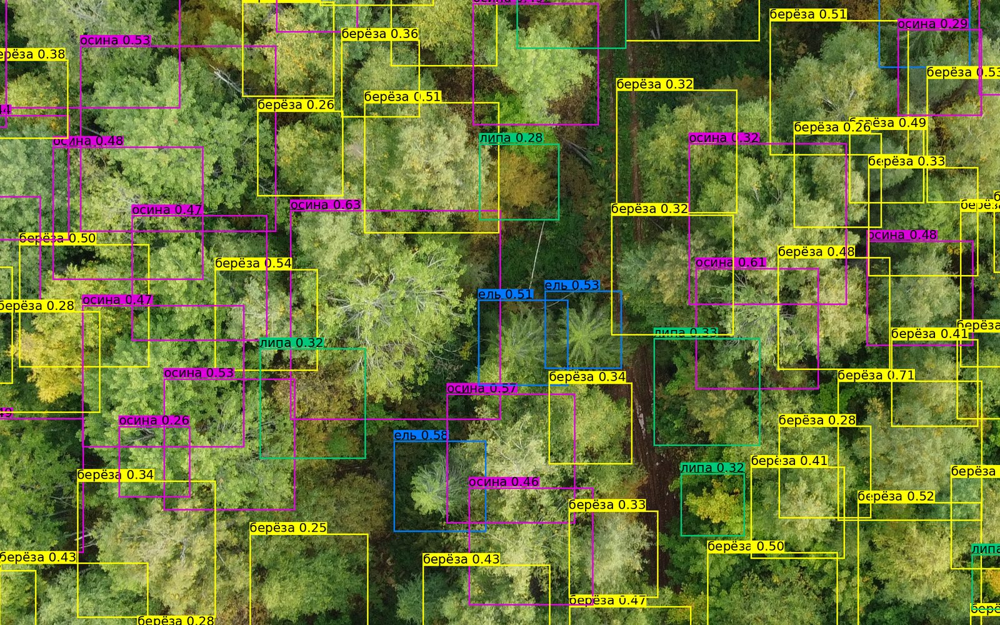
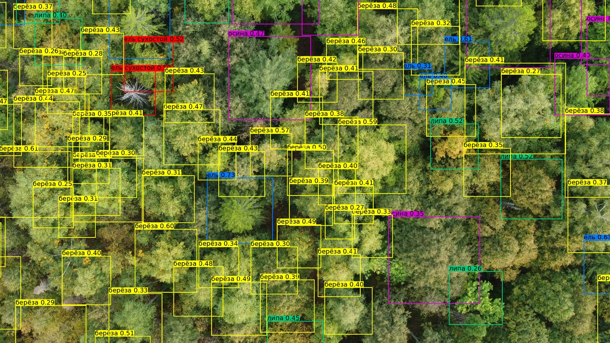

Проект реализован при поддержке Фонда содействия инновациям в рамках программы «Студенческий стартап» мероприятия «Платформа университетского технологического предпринимательства» федерального проекта «Технологии»
Проект реализован при поддержке Фонда содействия инновациям в рамках программы «Студенческий стартап» мероприятия «Платформа университетского технологического предпринимательства» федерального проекта «Технологии»
Программное обеспечение для подсчёта деревьев и определения видового состава по снимкам с беспилотных летательных аппаратов
Снимки с лёгкого беспилотного летательного аппарата (БПЛА) загружаются в программу, нейросеть находит кроны деревьев, считает их и определяет породы. Результат выводится в таблице и выгружается в файлы для геоинформационных систем.
Как это работает Связаться
Принимает отдельные кадры аэрофотосъёмки и готовые ортофотопланы в формате GeoTIFF через графическое окно.
Нейросеть находит кроны деревьев на изображении, в том числе на больших ортофотопланах за счёт разбиения на фрагменты.
Определяет число деревьев и распределение по породам, обученным на снимках лесов Удмуртской Республики.
Рассчитывает число деревьев на гектар по участку или по границе, заданной файлом KML.
Выгружает таблицу результатов в CSV и геопривязанные контуры крон в GeoJSON для работы в геоинформационных системах (ГИС).
Обработка выполняется локально на компьютере с видеокартой, без передачи снимков на внешние серверы.
Инвентаризация насаждений, мониторинг состояния лесов, оценка объёмов древесины по данным аэрофотосъёмки.
Планирование вырубок, оценка качества и объёма ресурсов на делянке, таксация в ускоренные сроки.
Мониторинг экосистем, выявление незаконных вырубок, последствий пожаров и деградации насаждений.
Лёгкий беспилотник снимает участок в надир с высоты 100-150 м. Достаточно потребительской камеры и стандартного полётного задания.
Кадры или собранный ортофотоплан выбираются в окне программы. Границу участка можно задать файлом KML.
Нейросеть выделяет кроны, считает деревья, определяет породы и вычисляет густоту на гектар.
Итоги показываются в таблице в окне программы и выгружаются в CSV и GeoJSON для отчётов и ГИС.
Съёмка выполнена в лесничествах Удмуртской Республики: Балезинское, Воткинское, Июльское, Яган. Для каждого участка построены ортофотоплан и цифровая модель поверхности, на которых обучается и проверяется нейросеть.

Не требуется дорогая авиация и специальное оборудование: подходят компактные беспилотники малого радиуса действия.
Полёты на высоте 100-150 м дают снимки, на которых различимы отдельные кроны и их породные признаки.
Обработка участка занимает часы вместо недель наземных работ с выездом бригад.
Для съёмки и запуска обработки не нужна специальная квалификация: несколько шагов в окне программы.
Обрабатываются участки любого размера, в том числе небольшие делянки от нескольких гектаров.
Нейросеть обучена на собственной разметке снимков лесов России и дообучается под новые регионы и породы.
Разработчик программного обеспечения ЦИФРОЛЕС. Компания создана в 2025 году в Ижевске в рамках программы «Студенческий стартап» Фонда содействия инновациям.
По вопросам пилотного применения программы, сотрудничества и доступа к данным: cifroles@gmail.com
ООО «ЦИФРОЛЕС», г. Ижевск, Удмуртская Республика.